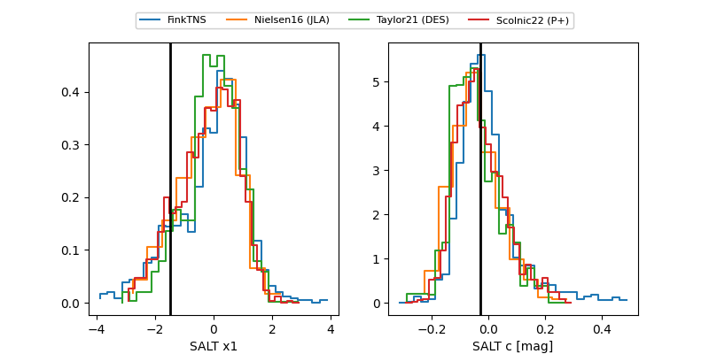

FINK: ZTF25ablfpbe
Lasair: ZTF25ablfpbe
ALeRCE: ZTF25ablfpbe
TNS: 2025vdm
YSE: 2025vdm
ZTF25ablfpbe (ztf,fink)
2025vdm (tns,yse)
ATLAS25khs (atlas)
PS25hnz (panstarrs)
equatorial (ra, dec) = (35.5382,-18.30546)
galactic (l, b) = (194.7947,-67.34445)

last atlasc=19.33, atlaso=19.80, ps1::g=20.99, ps1::i=20.17, ps1::r=20.23, ztfg=19.75, ztfr=20.08
1 atlasc, 1 atlaso, 1 ps1::g, 1 ps1::i, 1 ps1::r, 1 ztfg, 5 ztfr detections